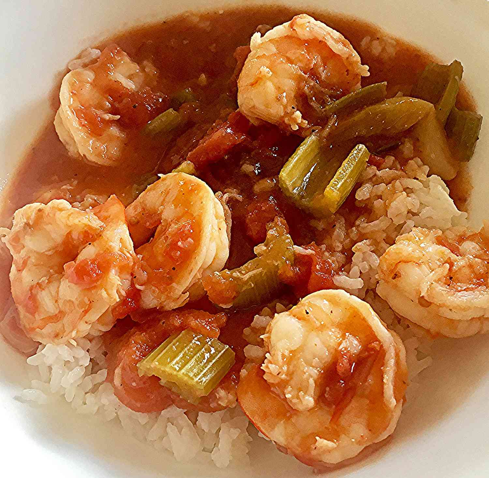

Spicy Shrimp Gumbo

Description
Gumbo is the official state cuisine in the state of Louisiana.
Ingredients
- ½ cup vegetable oil
- 1 large onion, chopped
- ½ cup finely chopped celery
- ½ cup sliced green onion
- ½ cup chopped fresh parsley (Optional)
- 6 cloves garlic, minced
- 4 cups chicken broth
- 1 teaspoon salt
- ½ teaspoon ground red chile pepper
- 2 pounds fresh medium shrimp, peeled and deveined
- 3 cups hot cooked rice
- 9 sprigs fresh parsley (Optional)
Steps
- Combine vegetable oil and flour in a large stockpot over medium heat; cook, stirring often, until roux is dark brown, 10 to 15 minutes.
- Stir onion, celery, green onion, parsley, and garlic carefully into the hot roux; it may splatter. Cook and stir until onion mixture is tender, about 5 minutes. Pour in broth. Season with salt and red chile pepper. Simmer gumbo, covered, until flavors combine, about 15 minutes.
- Stir shrimp into the stockpot; cook until pink and opaque, 3 to 5 minutes.
- Place 1/3 cup rice into each serving bowl. Ladle shrimp gumbo on top. Garnish with fresh parsley.
- Enjoy!